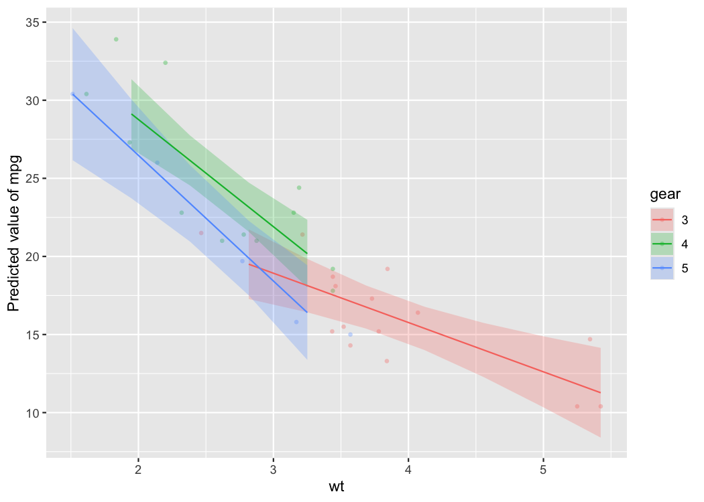
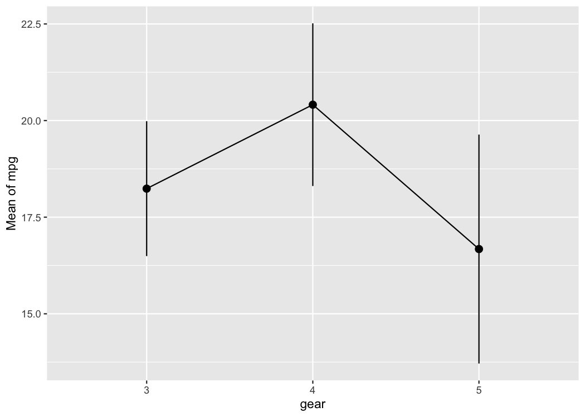

“Damned are those who believe without seeing”
easystats is a collection of packages that operate in synergy to provide a consistent and intuitive syntax when working with statistical models in the R programming language (R Core Team, 2021). Most easystats packages return comprehensive numeric summaries of model parameters and performance. The see package complements these numeric summaries with a host of functions and tools to produce a range of publication-ready visualizations for model parameters, predictions, and performance diagnostics. As a core pillar of easystats, the see package helps users to utilize visualization for more informative, communicable, and well-rounded scientific reporting.
Statement of Need
The grammar of graphics (Wilkinson, 2012), largely due to its implementation in the ggplot2 package (Wickham, 2016), has become the dominant approach to visualization in R. Building a model visualization with ggplot2 is somewhat disconnected from the model fitting and evaluation process. Generally, this process entails:
- Fitting a model.
- Extracting desired results from the model (e.g., model parameters and intervals, model predictions, diagnostic statistics) and arranging them into a dataframe.
- Passing the results dataframe to
ggplot()and specifying the graphical parameters. For example:
library(ggplot2)
# step-1
model <- lm(mpg ~ factor(cyl) * wt, data = mtcars)
# step-2
results <- fortify(model)
# step-3
ggplot(results) +
geom_point(aes(x = wt, y = mpg, color = factor(cyl))) +
geom_line(aes(x = wt, y = .fitted, color = `factor(cyl)`))A number of packages have been developed to extend ggplot2 and assist with model visualization (for a sampling of these packages, visit ggplot2-gallery). Some of these packages provide functions for additional geoms, annotations, or common visualization types without linking them to a specific statistical analysis or fundamentally changing the ggplot2 workflow (e.g., ggrepel, ggalluvial, ggridges, ggdist, ggpubr, etc.). Other ggplot2 extensions provide functions to generate publication-ready visualizations for specific types of models (e.g., metaviz, tidymv, sjPlot, survminer). For example, the ggstatsplot package (Patil, 2021) offers visualizations for statistical analysis of one-way factorial designs, and the plotmm package (Waggoner, 2020) supports specific types of mixture model objects.
The aim of the see package is to produce visualizations for a wide variety of models and statistical analyses in a way that is tightly linked with the model fitting process and requires minimal interruption of users’ workflow. see accomplishes this aim by providing a single plot() method for objects created by the other easystats packages, such as parameters tables, modelbased predictions, performance diagnostic tests, correlation matrices, and so on. The easystats packages compute numeric results for a wide range of statistical models, and the see package acts as a visual support to the entire easystats ecosystem. As such, visualizations corresponding to all stages of statistical analysis, from model fitting to diagnostics to reporting, can be easily created using see. see plots are compatible with other ggplot2 functions for further customization (e.g., labs() for a plot title). In addition, see provides several aesthetic utilities to embellish both easystats plots and other ggplot2 plots. The result is a package that minimizes the barrier to producing high-quality statistical visualizations in R.
The central goal of easystats is to make the task of doing statistics in R as easy as possible. This goal is realized through intuitive and consistent syntax, consistent and transparent argument names, comprehensive documentation, informative warnings and error messages, and smart functions with sensible default parameter values. The see package follows this philosophy by using a single access point—the generic plot() method—for visualization of all manner of statistical results supported by easystats.
Installation

The see package is available on CRAN, while its latest development version is available on R-universe (from rOpenSci).
| Type | Source | Command |
|---|---|---|
| Release | CRAN | install.packages("see") |
| Development | R-universe | install.packages("see", repos = "https://easystats.r-universe.dev") |
Once you have downloaded the package, you can then load it using:
This package provides visualisation toolbox for R packages in the easystats ecosystem. But note that it will not download any of the easystats packages for you. Rather, it will be loaded when a respective plotting method is requested by an easystats package.
Documentation
Following resources are a good way to get to know more about the functionality offered by this package:


Plotting functions for ‘easystats’ packages
Below we present one or two plotting methods for each easystats package, but many other methods are available. Interested readers are encouraged to explore the range of examples on the package website.
parameters
The parameters package converts summaries of regression model objects into dataframes (Lüdecke et al., 2020). The see package can take this transformed object and, for example, create a dot-and-whisker plot for the extracted regression estimates simply by passing the parameters class object to plot().
library(parameters)
library(see)
model <- lm(wt ~ am * cyl, data = mtcars)
plot(parameters(model))
As see outputs objects of class ggplot, ggplot2 functions can be added as layers to the plot the same as with all other ggplot2 visualizations. For example, we might add a title using labs() from ggplot2.
library(parameters)
library(see)
model <- lm(wt ~ am * cyl, data = mtcars)
plot(parameters(model)) +
ggplot2::labs(title = "A Dot-and-Whisker Plot")
Plotting functions for the parameters package are demonstrated in this vignette.
bayestestR
Similarly, for Bayesian regression model objects, which are handled by the bayestestR package (Makowski et al., 2019), the see package provides special plotting methods relevant for Bayesian models (e.g., Highest Density Interval, or HDI). Users can fit the model and pass the model results, extracted via bayestestR, to plot().
library(bayestestR)
library(rstanarm)
library(see)
set.seed(123)
model <- stan_glm(wt ~ mpg, data = mtcars, refresh = 0)
result <- hdi(model, ci = c(0.5, 0.75, 0.89, 0.95))
plot(result)Plotting functions for the bayestestR package are demonstrated in this vignette.
performance
The performance package is primarily concerned with checking regression model assumptions (Lüdecke et al., 2021). The see package offers tools to visualize these assumption checks, such as the normality of residuals. Users simply pass the fit model object to the relevant performance function (check_normality() in the example below). Then, this result can be passed to plot() to produce a ggplot2 visualization of the check on normality of the residuals.
library(performance)
library(see)
model <- lm(wt ~ mpg, data = mtcars)
check <- check_normality(model)
## Warning: Non-normality of residuals detected (p = 0.016).
plot(check, type = "qq")
Plotting functions for the performance package are demonstrated in this vignette.
effectsize
The effectsize package computes a variety of effect size metrics for fitted models to assesses the practical importance of observed effects (Ben-Shachar et al., 2020). In conjunction with see, users are able to visualize the magnitude and uncertainty of effect sizes by passing the model object to the relevant effectsize function (omega_squared() in the following example), and then to plot().
library(effectsize)
library(see)
model <- aov(wt ~ am * cyl, data = mtcars)
plot(omega_squared(model))
Plotting functions for the effectsize package are demonstrated in this vignette.
modelbased
The modelbased package computes model-based estimates and predictions from fitted models (Makowski et al., 2020a). see provides methods to quickly visualize these model predictions. For the following example to work, you need to have installed the emmeans package first.
library(modelbased)
library(see)
model <- lm(mpg ~ wt * as.factor(cyl), data = mtcars)
# for this to work, *emmeans* package should be available
predicted <- estimate_prediction(model)
plot(predicted)
One can also visualize marginal means (i.e., the mean at each factor level averaged over other predictors) using estimate_means(), that is then passed to plot().
means <- estimate_means(model)
plot(means)
Plotting functions for the modelbased package are demonstrated in this vignette.
correlation
The correlation package provides a unified syntax and human-readable code to carry out many types of correlation analysis (Makowski et al., 2020b). A user can run summary(correlation(data)) to create a construct a correlation matrix for the variables in a dataframe. With see, this matrix can be passed to plot() to visualize these correlations in a correlation matrix.
library(correlation)
library(see)
results <- summary(correlation(iris))
plot(results)
Plotting functions for the correlation package are demonstrated in this vignette.
Themes
Modern
library(ggplot2)
ggplot(iris, aes(x = Sepal.Width, y = Sepal.Length, color = Species)) +
geom_point2() +
theme_modern()
Lucid
library(ggplot2)
p <- ggplot(iris, aes(x = Sepal.Width, y = Sepal.Length, color = Species)) +
geom_point2()
p + theme_lucid()

Palettes
This is just one example of the available palettes. See this vignette for a detailed overview of palettes and color scales.
Material design
p1 <- ggplot(iris, aes(x = Species, y = Sepal.Length, fill = Species)) +
geom_boxplot() +
theme_modern(axis.text.angle = 45) +
scale_fill_material_d()
p2 <- ggplot(iris, aes(x = Species, y = Sepal.Length, fill = Species)) +
geom_violin() +
theme_modern(axis.text.angle = 45) +
scale_fill_material_d(palette = "ice")
p3 <- ggplot(iris, aes(x = Petal.Length, y = Petal.Width, color = Sepal.Length)) +
geom_point2() +
theme_modern() +
scale_color_material_c(palette = "rainbow")
Geoms
Better looking points
geom_points2() and geom_jitter2() allow points without borders and contour.
normal <- ggplot(iris, aes(x = Petal.Width, y = Sepal.Length)) +
geom_point(size = 8, alpha = 0.3) +
theme_modern()
new <- ggplot(iris, aes(x = Petal.Width, y = Sepal.Length)) +
geom_point2(size = 8, alpha = 0.3) +
theme_modern()
plots(normal, new, n_columns = 2)
Half-violin Half-dot plot
Create a half-violin half-dot plot, useful for visualising the distribution and the sample size at the same time.
ggplot(iris, aes(x = Species, y = Sepal.Length, fill = Species)) +
geom_violindot(fill_dots = "black") +
theme_modern() +
scale_fill_material_d()
Radar chart (Spider plot)
library(dplyr)
library(tidyr)
# prepare the data in tidy format
data <- iris %>%
group_by(Species) %>%
summarise_all(mean) %>%
pivot_longer(-Species)
data %>%
ggplot(aes(
x = name,
y = value,
color = Species,
group = Species,
fill = Species
)) +
geom_polygon(size = 1, alpha = .1) +
coord_radar() +
theme_radar()
Contributing and Support
In case you want to file an issue or contribute in another way to the package, please follow this guide. For questions about the functionality, you may either contact us via email or also file an issue.
Code of Conduct
Please note that this project is released with a Contributor Code of Conduct. By participating in this project you agree to abide by its terms.
References
Ben-Shachar, M. S., Lüdecke, D., & Makowski, D. (2020). effectsize: Estimation of effect size indices and standardized parameters. Journal of Open Source Software, 5(56),
Lüdecke, D., Ben-Shachar, M. S., Patil, I., & Makowski, D. (2020). Extracting, computing and exploring the parameters of statistical models using R. Journal of Open Source Software, 5(53), 2445. https://doi.org/10.21105/joss.02445
Lüdecke, D., Ben-Shachar, M. S., Patil, I., Waggoner, P., & Makowski, D. (2021). performance: An R package for assessment, comparison and testing of statistical models. Journal of Open Source Software, 6(60), 3139. https://doi.org/10.21105/joss.03139
Makowski, D., Ben-Shachar, M. S., & Lüdecke, D. (2019). bayestestR: Describing effects and their uncertainty, existence and significance within the Bayesian framework. Journal of Open Source Software, 4(40), 1541. https://doi.org/10.21105/joss.01541
Makowski, D., Ben-Shachar, M. S., Patil, I., & Lüdecke, D. (2020a). Estimation of model-based predictions, contrasts and means. CRAN. https://github.com/easystats/modelbased
Makowski, D., Ben-Shachar, M. S., Patil, I., & Lüdecke, D. (2020b). Methods and algorithms for correlation analysis in R. Journal of Open Source Software, 5(51), 2306. https://doi.org/10.21105/joss.02306
Patil, I. (2021). Visualizations with statistical details: The ’ggstatsplot’ approach. Journal of Open Source Software, 6(61), 3167. https://doi.org/10.21105/joss.03167
R Core Team. (2021). R: A language and environment for statistical computing. R Foundation for Statistical Computing. https://www.R-project.org/
Waggoner, P. D. (2020). plotmm: Tidy tools for visualizing mixture models. https://CRAN.R-project.org/package=plotmm
Wickham, H. (2016). ggplot2: Elegant graphics for data analysis. Springer-Verlag New York.
Wilkinson, L. (2012). The Grammar of Graphics. In Handbook of computational statistics (pp. 375–414). Springer.